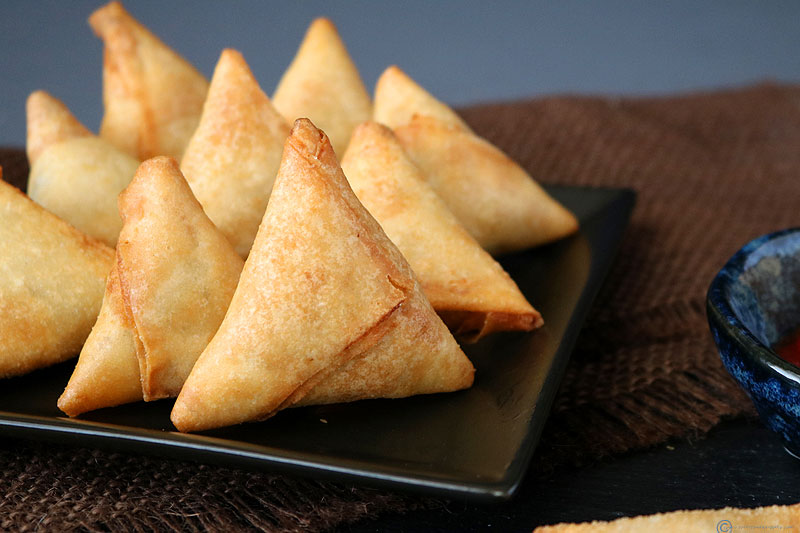

Kenya is located in the western part of Africa. It's northeast of Tanzania,
east of Uganda. West of Somalia, south of Ethiopia.

In Kenya, they eat lots of food. Like ugali, githeri,
Sukuma wiki, kachumbari, mandazi, chapati, and samosa.

Masai women usually wear vast plate-like bead necklaces, and a khanga. Masai men
usually wear a red-checked shuka (Masai blanket) and carry a distinctive ball-ended club.

Kenya has many celebrations and tradition. Here are some.
-East African Arts Festival
-Easter
-Eid al-Fitr
-International Camel Derby and Festival
-Mombasa Carnival
-Jamhuri Day
-Christmas